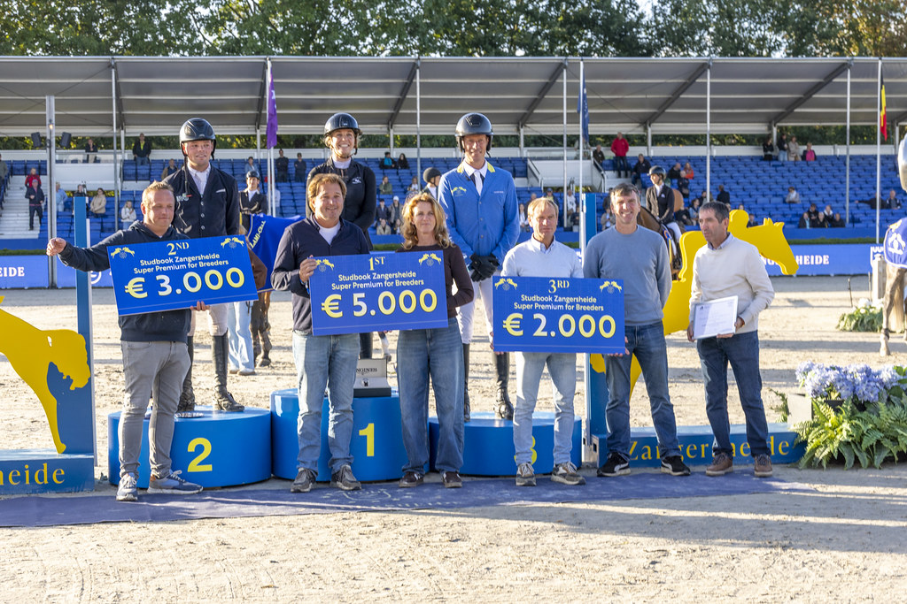

Irlanda firma el doblete en el Mundial de Caballos Jóvenes de Zangersheide
Irlanda se llevó dos de los tres títulos en juego este domingo en el FEI WBFSH Jumping World Breeding Championship for Young Horses de Stoeterij Zangersheide (Lanaken, Bélgica), reafirmando su condición de potencia europea en la cría del caballo de salto joven.

Uso editorial autorizado FEI
Irlanda se llevó dos de los tres títulos en juego este domingo en el FEI WBFSH Jumping World Breeding Championship for Young Horses de Stoeterij Zangersheide (Lanaken, Bélgica), reafirmando su condición de potencia europea en la cría del caballo de salto joven. La FEI confirmó los tres nuevos campeones tras la manga final.
En la categoría de seis años, la amazona irlandesa Niamh McEvoy se colgó el oro con Easy Peasy Indebus Z tras un recorrido decisivo sin faltas en la final. La categoría de cinco años volvió también a manos irlandesas: Sam Widger se proclamó campeón mundial con Vintage van de Heyveldhoeve, que confirmó los buenos registros mostrados durante toda la semana en el Mundial de la WBFSH.
El único título que se escapó del combinado irlandés fue el de siete años, donde la neerlandesa Roosje Brouwer se impuso con Elotte Z, un producto de la cría Zangersheide que se convierte en referencia de su generación. La final de siete años dejó un desempate ajustado con varios binomios en el intento por hacerse con el título más veterano del programa mundial.
El Mundial de Caballos Jóvenes de Zangersheide sigue siendo la vitrina anual de la cría europea del caballo de salto y una cita obligada para las federaciones de estudbook. La edición 2026 reunió a más de 350 binomios de 32 países, con clasificatorias durante toda la semana y finales en la pista principal del recinto belga.
Por Lucía Valdeolmos